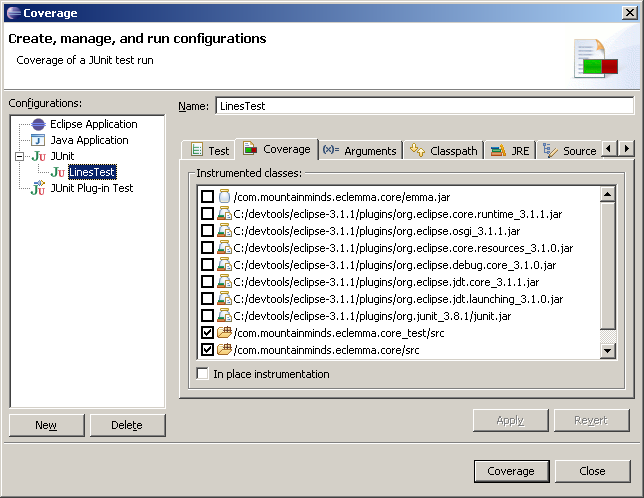

Eclipse allows running Java programs directly from the workbench. Programs can be launched in different so called launch modes. In a standard Eclipse installation you can launch your programs either in Run or in Debug mode. EclEmma adds a new launch mode Coverage which is available from the Run menu and the toolbar:

Note: If the Coverage drop-down toolbar button is not visible in your current workbench perspective, open the Customize Perspective... dialog and enable the Coverage command group on the Commands tab.
Existing launch configurations can be launched directly in Coverage mode using default settings. Optionally these settings can be modified in the coverage launch dialog:

In the Coverage tab the Java classes that should be prepared for coverage analysis can be selected. EMMA modifies these classes in a process called instrumentation. Instrumentation is possible for source based classes as well as for binary libraries. At least one entry must be selected to run an application in Coverage mode.
Note: Source folders with the same output location can not be selected separately. If you want to select them individually please specify a different output location for each source folder. This can be done in the Java project settings.
Coverage data is collected and presented automatically after the application has terminated on its own. If the Java VM is killed externally, e.g. with the Eclipse Terminate action, coverage results can not be shown.
EclEmma tries not to touch your project's content. Therefore class files are normally instrumented outside your project in a temporary folder. Optionally class files can be instrumented in-place by selecting the corresponding check box on the Coverage tab.
| Outside Instrumentation | In-place Instrumentation | |
| Instrumentation | Instrumented classes will be saved in a temporary folder outside your project. | The compiled classes will be instrumented directly in your project. |
| Runtime Classpath | The classpath will be modified to include the locations of the instrumented classes. | The classpath will not be modified. |
| Binary Libraries | Binary libraries can also be analysed for coverage. | Binary libraries can not be analysed, as this would permanently modify them. |
| Supported Launch Types | Local Java application, JUnit test, TestNG test | Local Java application, JUnit test, TestNG test, Eclipse/RCP application, JUnit plug-in test, Equinox OSGi framework |
Programs that do not accept a Java classpath, i.e. using their own class loading mechanisms, require in-place instrumentation.
Warning: In-place instrumentation will modify your class files. Instrumented class files can not be used with launch modes other than Coverage. Therefore a clean build is required after a coverage launch with in-place instrumentation.